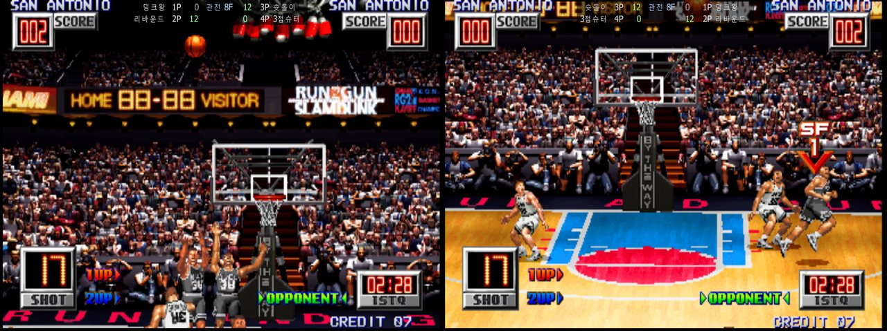
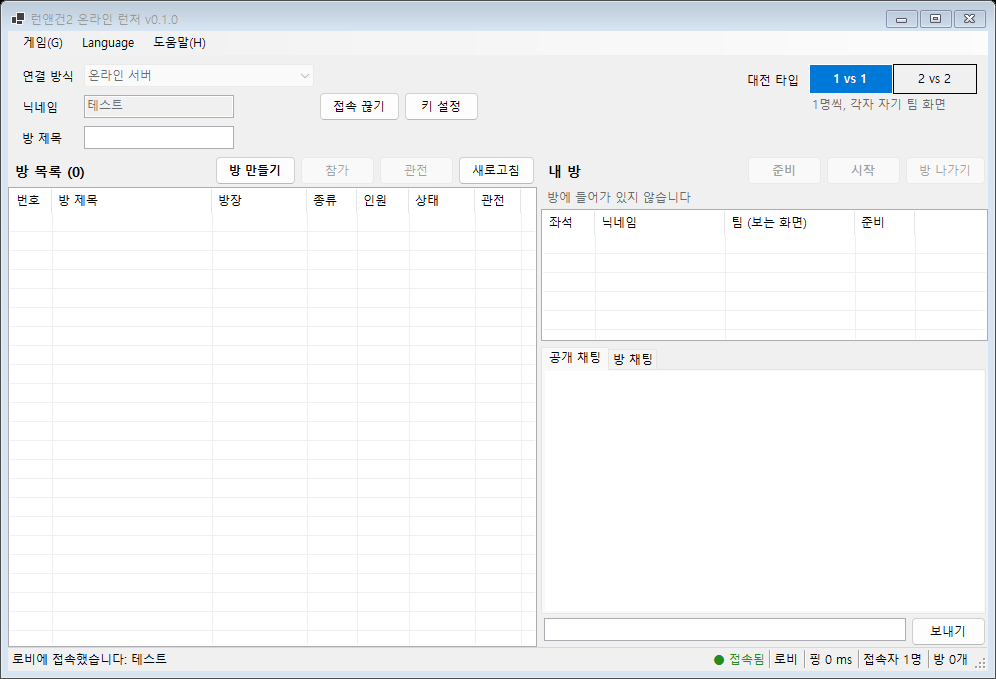

4한 방 최대 인원
4관전석
2–8F핑 따라 자동 입력 지연
0원무료 · .NET 설치 필요 없음
FEATURES
두 모니터, 하나의 코트
원래 오락실 기판은 팀마다 모니터가 따로 있었습니다. 온라인에서도 각자 자기 팀 화면으로 봅니다.

-
1 vs 1 · 2 vs 2
1 vs 1은 각자 자기 팀 모니터로, 2 vs 2는 두 명씩 한 팀. 기판 그대로의 '상대 화면과 대전' 방식입니다.
-
팀 선택까지 자동
코인, 시작, 게임 방식 선택을 런처가 알아서 진행합니다. 무료 플레이라 동전도 필요 없습니다.
-
관전
경기 중에도 최대 4명까지 들어와서 볼 수 있습니다. 관전자는 두 팀 화면을 나란히 봅니다.
-
인터넷에서도 부드럽게
입력 지연을 핑에 맞춰 2~8프레임으로 정하고 경기 중에도 조절합니다. 이름과 핑은 작은 HUD로 보여줍니다.
-
내 키 그대로
처음 한 번 싱글게임에서 키를 정하면 끝. 온라인 경기 중에는 Tab, F1~F12, 일시정지, Esc가 잠겨서 실수로 게임이 멈추지 않습니다.
-
리플레이 · 경기 기록
온라인 경기는 모두 리플레이로 저장됩니다(게임 > 리플레이 보기). 서버에서 끝까지 치른 경기는 리플레이와 함께 경기 기록에 올라옵니다.
-
서버 또는 직접 연결
온라인 서버로 하거나, 내 PC로 방을 열어(방 1개, 최대 4명) 친구가 내 주소로 들어오게 할 수 있습니다.
TIP-OFF
코트까지 네 단계
-
압축을 폴더에 모두 풀기
압축 파일 안에서 바로 실행하지 마세요. 폴더 이름에 한글이 있어도 됩니다.
-
게임 롬 넣기
가지고 계신 rungun2.zip, konamigx.zip(MAME 0.289 기준)을 mame\roms 폴더에 넣습니다.
-
RG2Launcher.exe 실행
연결 방식을 고르고 닉네임을 넣은 뒤 [접속]. 처음에는 키 설정용 싱글게임이 켜집니다.
-
준비, 그리고 점프볼
대전 타입을 고르고 [방 만들기] 또는 [참가]. 모두 [준비]하면 방장이 [시작]합니다.

온라인 서버
그대로 [접속]하면 됩니다. 방, 채팅, 경기가 서버를 거쳐서 포트를 열 필요가 없습니다.
직접 연결 · 방 열기
내 PC가 방이 됩니다. 다른 집에서 들어오려면 공유기에서 TCP 7010 포트를 열고, Windows 방화벽 창에서 허용해 주세요.
TCP 7010
직접 연결 · 참가
방장에게 받은 주소를 넣고 [접속]. 포트를 빼면 7010으로 접속합니다.
- 운영체제
- Windows 10 · 11 (64비트)
- 설치
- 필요 없음 · 풀어서 실행 (.NET 포함)
- 게임 롬
- 포함 안 됨 · rungun2.zip + konamigx.zip
- PC 사양
- MAME에서 무거운 편이라 아주 오래된 PC는 느릴 수 있습니다
게임 롬 파일은 내려받는 파일에 들어 있지 않습니다. 직접 가지고 계신 롬을 넣어 주세요.